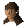

Elena

| Config name | elenap |
| NPC id | 715 |
| Combat level | hidden |
| Options | Talk-to |
| Wander range | 5 tiles from spawn |
| Defined in | scripts/quests/quest_elena/configs/elena.npc |
Elena
She doesn't look too happy.
Show all 1 spawn on the world map → Open in knowledge graph →
Locations
| Area | Coordinates | Level | Count | Map |
|---|---|---|---|---|
| Battlefield (underground) | 2541, 9672 | 0 | 1 | view |
Dialogue
PlayerHi, you're free to go! Your kidnappers don't seem to be about right now.
ElenaThank you, being kidnapped was so inconvenient. I was on my way back to East Ardougne with some samples, I want to see if I can diagnose a cure for this plague.
PlayerWell you can leave via the manhole in the middle of the city.
ElenaGo and see my father, I'll make sure he adequately rewards you.
Quests
Referenced in scripts
scripts/quests/quest_elena/scripts/elena.rs2scripts/quests/quest_elena/scripts/plaguehouse.rs2